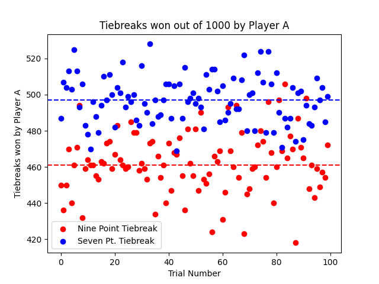
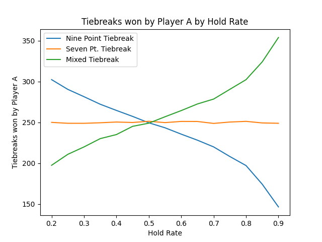
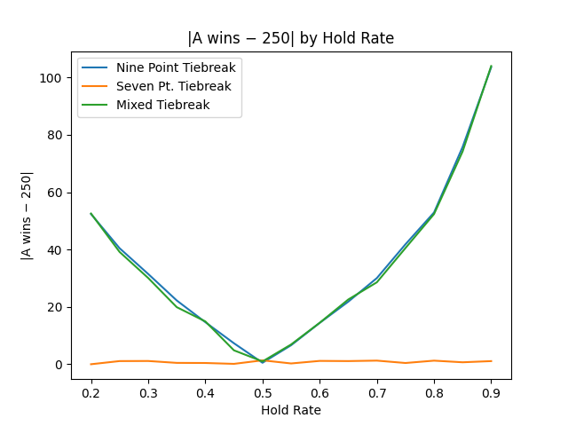
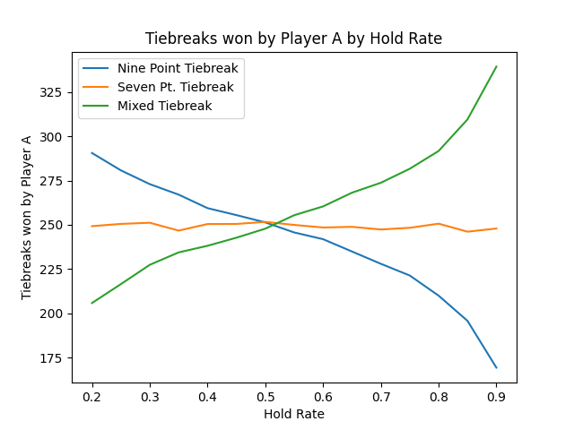
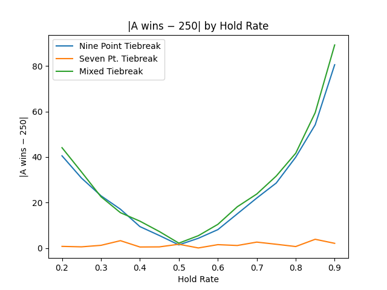
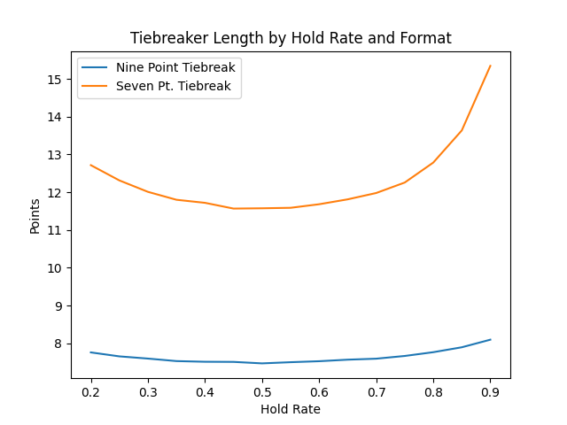
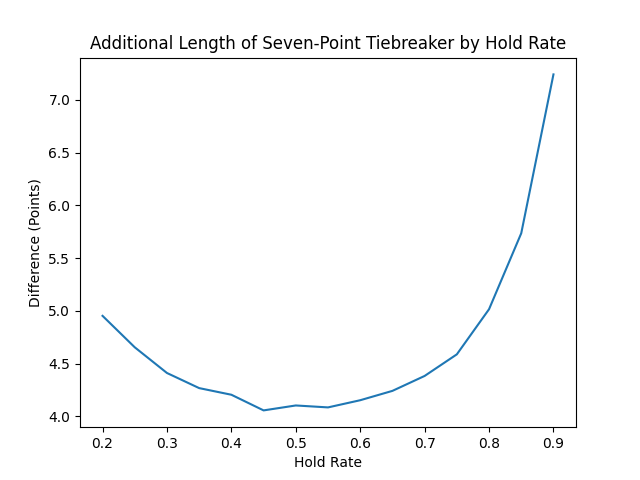

Evaluating the Fairness of the 9-Point Tennis Tiebreak Using Monte Carlo Methods
This blog post is based on a project I worked on in Fall 2022 as an analyst with the Cornell Sports Analytics Club.
Motivation
My interest in this project started from experience on court. During a college club tournament, I played in the deciding match of the semifinals, which came down to a tiebreak. The tournament used a 9-point tiebreak format, an unorthodox format I had never played before. Neither team broke serve over the first six points, but suddenly, we were staring down three match points. I found it frustrating that a player could be so close to losing despite never losing serve. This experience made me want to explore whether the 9-point format is indeed inferior and fundamentally unfair.Background
Under most standard tennis scoring formats, tiebreaks are used to decide sets that are tied after a fixed number of games (7-point tiebreak) or to decide matches that are tied one set apiece (10-point tiebreak). In both cases, the first player to reach the required number of points wins, but they must be ahead by two points for the tiebreak to end. Both formats use the “A-B-B-A” serving format in which the player or team who serves the first point also serves the fourth, fifth, eighth, ninth, and so on.
The idea of a tiebreak was chiefly championed by James “Jimmy” Van Alen in the 1950s, as part of his broader “Van Alen Streamlined Scoring System” (VASSS). He proposed a “first to five” sudden-death tiebreak (the 9-point format) as a way to prevent marathon sets that could drag on indefinitely under the traditional rule requiring a two-game lead [1]. Van Alen also considered a longer “best-of-twelve” (7-point format) variant, which over time became the more widely accepted form [2]. Interestingly, many professional players at the time complained that the 9-point format was "unfair," since one player received an extra serve [3].
The U.S. Open was the first Grand Slam to adopt a tiebreak in 1970, using Van Alen’s sudden-death “first to five” system (with no two-point margin at 4–4) [4]. That version was used through 1974, after which the tournament, and eventually others, transitioned to the 7-point tiebreak. Over subsequent decades, most major tournaments adopted tiebreaks in earlier sets, and gradually also in final sets, making the tiebreak a staple of modern tennis scoring. Today, the 7-point tiebreak format is widely used across almost every level of tennis, although the 9-point format survives mainly in World Team tennis events.
Let's now go over tennis concepts that are relevant this project:
- At almost every level of tennis, the server has an advantage.
- A "hold" is defined as the server winning their service game (or point in a tiebreak).
- A "break" is defined as the returner winning the game or tiebreak point.
- When a returner is within one point of winning a game, the next point is a “break point”.
- When either player is within one point of winning a match, the next point is a “match point.”
In this project, I tried to measure the fairness of three different tiebreak formats: the 7-point and 9-point formats established above, as well as a hybrid "mixed" format I propose. The mixed format is a fixed-length, first to five tiebreak like the 9-point format, but it uses the serving pattern of the 7-point tiebreak.
| Tiebreak | Fixed Length? | Serve Format | Points to Win |
|---|---|---|---|
| Seven Point | No | ABBAABB… | 7+ |
| Nine Point | Yes | AABBAABBB | 5 |
| Mixed | Yes | ABBAABBAA | 5 |
Going forward, the player or doubles team which serves first in a tiebreak will be referred to as "Player A" and the other will be referred to as "Player B". Doubles matches will not be treated differently, and each team is treated as a single entity.
Monte-Carlo Methods
In computer science and statistics, Monte Carlo methods are a broad class of algorithms that rely on repeated random sampling to estimate results [5]. These methods are employed when the goal is to estimate a quantity that is difficult to calculate directly. For example, a good way to calculate the value of π from first principles is not straightfoward. However, this is a simple task using randomness: since a random point with x and y coordinates between 0 and 1 has a \(\frac{\pi}{4} \) probability of being inside the first quadrant of the unit circle, one can sample a large number of such points and multiply the proportion of points inside the unit circle by 4 to approximate \(\pi \). This project uses the same principle: instead of random points, I simulate many random tiebreaks to estimate the likelihood of different outcomes, since the problem is too complex to solve with a simple formula.
Analysis
Most of the analysis in this project is organized into several "experiments" or "scenarios".Before diving into them, it’s important to establish some statistical context for the simulations by grounding them in real ATP performance data.
I looked at how ATP Top 100 players performed in 2021 using data from Ultimate Tennis Statistics, I calculated average hold rates, return rates, break point statistics, and game lengths [6]. These numbers also serve as parameters for the simulations.
- Average Service Point Win %: 63.73% (91 players, 9 with no data)
- Average Return Point Win %: 36.97% (91 players)
- Average Break Points Saved %: 61.58% (91 players)
- Average Break Points Converted %: 39.33% (91 players)
- Average Points per Service Game: 6.40 (87 players)
- Average Points per Return Game: 6.42 (87 players)
- Average Game Time: 4.84 minutes (18 players)
Notice that break point statistics are slightly skewed compared to overall point statistics: break points saved are about 2.15% lower than the average service point win rate, and break points converted are about 2.36% higher than the return point win rate. On average, that’s a 2.26% swing. These small differences highlight the pressure of break points and potentially extend to match points.
Scenario 1
In the first scenario, I compared the fairness of the 9-point and 7-point tiebreak formats at a hold rate of .6373 or 63.73%. In this scenario, I ran 100 trials. In each trial, I simulate 1000 tiebreaks of each type and recorded the number of times that Player A (the first server) was victorious.

At a representative hold rate of 63.7%, the Monte Carlo simulations reveal a clear difference in fairness between the two tiebreak formats. In the 9-point format, Player A, the first server, won an average of only 46.2% of tiebreaks, compared to roughly 49.7% in the standard 7-point format.
To test whether either tiebreak format systematically favors the first server (Player A), I performed a one-sample t-test comparing the simulated mean number of wins per trial to the expected fair outcome of 500 (half of 1000). The t-statistic is given by:$$ t = \frac{\bar{x} - \mu_0}{s / \sqrt{n}} $$
where:
- \(\bar{x}\): sample mean number of Player A wins (out of 1000)
- \(\mu_0 = 500\): expected mean if both players are equally strong
- \(s\): sample standard deviation of the 100 trial means
- \(n = 100\): number of trials
Plugging in the values for the 9-point format:
$$ t = \frac{462.5 - 500}{\sqrt{286.86} / 10} \approx -22.1 $$
and for the 7-point format:
$$ t = \frac{496.99 - 500}{\sqrt{170.82} / 10} \approx -2.30 $$
A large magnitude of \(t\) indicates a significant deviation from fairness. Thus, the 9-point format shows a highly significant bias (|t| ≫ 2), while the 7-point format remains statistically consistent with a fair outcome.
These results indicate that the 9-point structure inherently favors the second server (Player B), primarily because Player B serves more points. In contrast, the 7-point tiebreak distributes serving advantages more evenly, producing outcomes much closer to a fair 50-50 split. In short, the simulation supports the conclusion that the 7-point tiebreak is statistically fairer, while the 9-point format systematically disadvantages the opening server. I hypothesized that the 9-point format would disadvantage someone, but I expected it to be the second server instead.
Scenario 2
The second scenario introduced two main changes. First, I includeded the third hybrid (Mixed) tiebreak format. Moreover, this scenario considered a range of hold rates, rather than just one.
In this experiment, I ran 15 trials, each with a hold rate between 20% and 90% (increasing by 5% each time). For each of the 15 hold rates, the simulation ran 100 trials, and each trial consisted of 500 simulated tiebreaks of each format: the 7-point, 9-point, and “mixed” (9-point length with 7-point serving order). For each hold rate, I recorded how often Player A won and then averaged those results across all trials. This produced a curve showing how each format’s fairness changes as serving becomes more or less dominant. The first plot shows the mean number of wins by Player A out of 500 (a value of 250 would indicate perfect fairness), while the second plot shows the absolute deviation from fairness, as a measure of imbalance.

After plotting the resulting data, I found that the chance that Player A wins is independent of serving ability under the 7-point format. However, for the other two formats, the chance that Player A wins is affected by serving ability. Only when the hold rate is around .5 are those formats fair. Below, I plotted the difference between the average number of tiebreaks Player A wins and the value 250, which makes it easier to visually compare the 9-point and the hybrid formats. The lines are almost identical, which shows that contrary to my original hypothesis, the hybrid format does not have a fairness advantage.

Scenario 3
Originally, one aspect of the 9-point I originally disliked was that a player could face multiple match points without previously losing a service point. Facing a match point adds additional pressure and therefore changes the probability of winning a point. Although I could not find direct data on match point conversion, I found data showing that in professional tennis, the server wins on break point 2-3% less than on a normal point.
To factor this in, I reran Scenario 2, but with an additional match point penalty of 5% (factoring in that there is more pressure on match point than break point and that professional players might be less susceptible to pressure than the average player). If a server was down match point, they would have a 5% lower chance of winning the point, whereas if they were one point away from victory, they would receive a 5% boost.

These plots closely resemble the plots from Scenario 2, and the match point penalty does not have a major effect. Again, the 9-point and hybrid formats are only fair when the hold rate is roughly 50%, whereas the 7-point format yields a chance of winning independent of the hold rate. In the plot below, there is some difference shown between the hybrid line and the 9-point line, but the differnece is small it could be due to noise.

Scenario 4
Because the hybrid format did not show any advantages over the other two, I excluded it from Scenario 4. In this scenario, I wanted to explore how much time using the 9-point format saves, since that is one of its purported advantages.
I varied the hold rate from 20% to 90% (in increments of 5%) and simulated 10,000 tiebreaks for both the 7-point and 9-point formats at each hold rate. For every simulated tiebreak, I recorded the total number of points played and then averaged those results. I included a match point adjustment factor like in Scenario 3, but used a smaller value of 2.255%.

The first plot shows how the expected tiebreak length changes with hold rate for each format. The second plot directly compares the two, displaying the additional number of points the 7-point format typically requires relative to the 9-point format. This experiment provides context for how much longer a fairer, “win-by-two” format tends to last, and whether that added fairness comes at the cost of significantly extended play.

To translate this difference into real time, consider that an average service game lasts about 4.84 minutes and contains roughly 6.40 points. That means each point takes about \( \frac{4.84}{6.40} \approx 0.76 \) minutes, or about 46 seconds. Since the 7-point format typically lasts up to five points longer than the 9-point format, this corresponds to roughly \( 5 \times 0.76 = 3.8 \) additional minutes of play. In other words, the fairer “win-by-two” format only extends a tiebreak by about three to four minutes on average, a modest trade-off for significantly improved fairness.
Conclusion
The goal of this project was to evaluate the fairness and practicality of the 9-point tennis tiebreak compared to the standard 7-point format, using Monte Carlo simulations grounded in real ATP player data. Across all simulated scenarios, the 7-point tiebreak consistently produced results closest to a 50–50 split between the first and second server, confirming its statistical fairness. In contrast, the 9-point tiebreak systematically favored the second server at realistic hold rates, with Player A winning only about 46% of the time at the ATP average hold rate. Introducing a hybrid format (same length as the 9-point but using the 7-point serving order) did not improve fairness, and applying a “match point pressure” adjustment also had minimal effect on outcomes.
Initially, I had hypothesized that the 9-point format was biased in favor of the first server rather than the second. Future work could include additional real-world factors to assess whether they influence the fairness of the 9-point format.
The 9-point format’s only measurable advantage is speed: simulations showed it saves roughly four to five points on average compared to the 7-point format. However, this time savings comes at the cost of a substantial structural bias against the first server, meaning the format sacrifices competitive integrity for only a modest reduction in match length. Given these results, the 7-point “win-by-two” tiebreak should remain the standard format for competitive play. The 9-point version, while efficient, is not fair under realistic conditions, and the hybrid alternative offers no meaningful improvement.